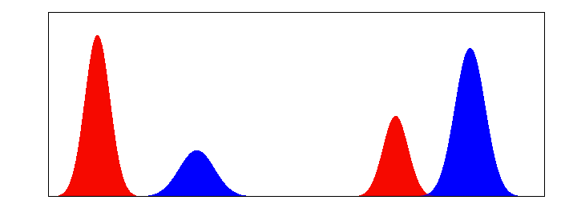

Lénaïc Chizat
Home
Curriculum
Talks & Organization
Code
Projects
Particle gradient flow
Unbalanced OT
Unbalanced Optimal Transport
In construction…

Geodesics for OT, linear and UOT geometry respectively.